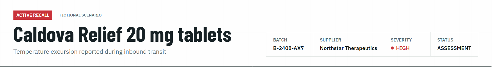
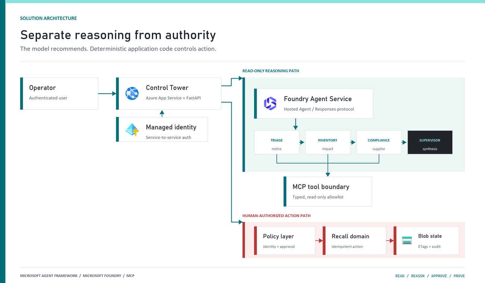
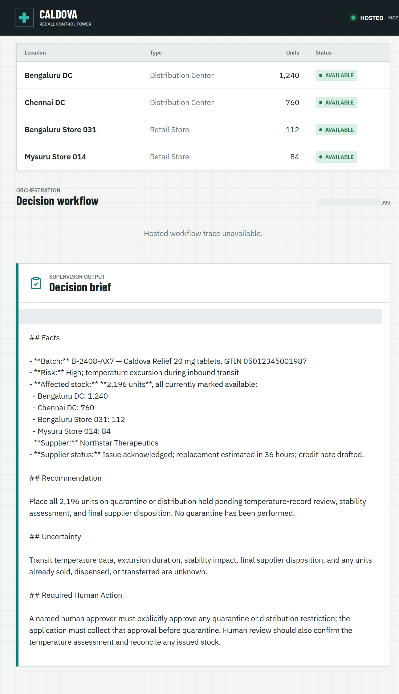

AI agents become operationally interesting when they can reach real systems. They also become operationally dangerous at exactly the same moment.
Caldova Recall Control Tower is a developer demonstration built around that tension. It uses a fictional pharmaceutical recall to show how an agent can gather evidence and prepare a decision while deterministic application code retains authority over approval and inventory mutation. The implementation combines the Model Context Protocol (MCP), Microsoft Agent Framework, a Microsoft Foundry Hosted Agent, FastAPI, Microsoft Entra authentication, managed identity, and optimistic concurrency in Azure Blob Storage.
Central design rule: Let the model interpret and recommend. Make ordinary code authenticate, authorize, mutate, and prove what happened.
You can open the Caldova Recall Control Tower to see the hosted application. Access requires an authorized Microsoft Entra identity. The source repository contains the application, infrastructure, tests, evaluation assets, and presentation material; availability depends on the repository's publication status.
Caldova is fictional, all operational data is synthetic, and this sample is not a production recall system or a source of clinical advice.
The demo starts with a temperature excursion affecting batch B-2408-AX7 of Caldova Relief 20 mg tablets. The synthetic inventory contains 2,196 units across two distribution centers and two retail stores. A useful system must establish the notice, locate every affected position, check supplier status, explain uncertainty, and recommend an action.
That analysis is a good fit for specialized agents. Quarantining inventory is not.
Quarantine changes operational state. It therefore needs an authenticated human, explicit authorization, a batch-scoped approval, concurrency control, idempotency, and an audit record. None of those guarantees should depend on a prompt being followed.

The solution has two related but deliberately separate paths.

The reasoning path invokes a Hosted Agent through the Responses protocol. Four agents run in a fixed sequence: triage, inventory impact, supplier/compliance, and supervisor. The first three have narrow read-only tools. The supervisor has no tools and synthesizes the accumulated context into a decision brief.
The authority path remains in the web application. It validates the EasyAuth identity claims, checks an approver allowlist, binds approval to the caller, batch, action, and current demo generation, and only then calls deterministic domain code. State is stored per actor in Blob Storage and updated with ETag match conditions so concurrent writes fail instead of silently overwriting each other.
There is also a deterministic localhost demo. It reuses synthetic domain fixtures and demonstrates MCP contracts, approval, quarantine, and replay without a model or cloud account. It is useful for development, but its typed approver name and in-memory state are not production identity or durable compliance evidence.
MCP standardizes how an AI application discovers and calls external tools. It does not remove the need to design those tools carefully.
Caldova exposes small, typed operations such as get_recall_notice, locate_inventory, and get_supplier_status. Inputs are constrained with Pydantic, and tool annotations tell clients that these operations are read-only and closed-world:
@mcp.tool(
title="Locate affected inventory",
annotations=ToolAnnotations(
read_only_hint=True,
open_world_hint=False,
),
)
def locate_inventory(batch_id: BatchId) -> dict[str, Any]:
return STORE.locate_inventory(batch_id)The mutation tool is separately marked destructive and requires a batch-scoped approval token. Those annotations improve discovery and planning, but they are metadata, not an authorization boundary. The real check occurs inside quarantine_batch, below the model and below the tool description.
The Hosted Agent does not receive the mutation tools at all. Its specialists call only three read operations through an isolated MCP stdio subprocess. This is stronger than asking an all-powerful agent to "please remain read-only": capability is constrained by construction.
The subprocess boundary also keeps MCP v2 dependencies isolated from the Foundry hosting environment. Each call has a timeout, bounded concurrency, structured JSON handling, and a generic failure response that does not leak subprocess details.
Multi-agent does not have to mean dynamic routing. Caldova uses an explicit sequence because the business dependency is explicit: validate the notice before locating inventory, locate inventory before checking supplier implications, and synthesize only after all three specialist outputs exist.
return (
WorkflowBuilder(start_executor=triage, output_from=[supervisor])
.add_edge(triage, inventory)
.add_edge(inventory, compliance)
.add_edge(compliance, supervisor)
.build()
.as_agent()
)This topology is easier to test and reason about than an unconstrained planner. Each specialist has one job and one tool allowlist. Full context is passed where synthesis requires it, while the supervisor remains tool-free.
Request isolation matters too. A hosted process can serve concurrent users, so workflow state must not leak between requests. The sample creates a fresh workflow agent for each request context rather than reusing mutable agent state globally.
On September 17, 2026, the hosted application completed a read-only assessment for the synthetic batch. The resulting brief reported:

The screenshot also shows an important truthfulness choice: the UI says Hosted workflow trace unavailable. The application does not invent stage completion or tool-call evidence when the hosted endpoint does not return trustworthy trace data. The answer can be displayed, but it must not be presented as proof of an internal execution path.
The hosted web path uses App Service authentication with Microsoft Entra. The application accepts the injected principal only on the configured App Service host, validates tenant and object identifiers, applies a user allowlist, and performs an additional approver check for mutation requests. State-changing calls also require the expected origin and an application request header.
Approval is then bound to five facts:
quarantine action.Resetting the demo creates a new generation, invalidating old handles. Consuming an approval does not make replay unsafe: the same bound handle can repeat the same quarantine operation, but domain code changes only positions that are not already quarantined. A second call reports an idempotent replay with zero additional positions changed.
This is the difference between a human-in-the-loop interface and a human-authorized system. A modal dialog provides user experience; identity binding and deterministic policy provide control.
The hosted application stores each actor's synthetic session in a separate Blob object. A load returns both JSON state and its ETag. A save uses IfNotModified semantics; if another request updated the same state first, Azure Storage rejects the stale write and the API returns a conflict.
conditions = (
{"etag": etag, "match_condition": MatchConditions.IfNotModified}
if etag else {}
)
await blob.upload_blob(
json.dumps(state),
overwrite=etag is not None,
**conditions,
)Without that condition, two browser requests could both read the same approval state and overwrite one another using last-writer-wins behavior. Agent systems do not get a concurrency exemption: ordinary distributed-systems rules still apply.
The analysis adapter accepts only HTTPS Foundry endpoints with the expected path, uses a managed-identity token for https://ai.azure.com/.default, disables redirects, and enforces bounded connect and overall timeouts. It accepts only a completed assistant response with non-empty output text.
If the endpoint times out, returns partial output, returns malformed data, or becomes unavailable, the application clears the analysis lease and reports that no inventory changed. It does not substitute a local answer and label it as hosted. Approval remains locked until a new hosted analysis succeeds.
This can feel strict during a demo, but it protects provenance. A degraded fallback is useful only when the UI and audit model can identify it accurately.
The sample provides useful evidence for several engineering claims:
It does not prove that the sample is a production recall platform. The scenario is synthetic. The local audit log is not tamper-evident. The hosted UI currently lacks trustworthy per-stage and per-tool trace rendering. Deployment-specific RBAC, EasyAuth configuration, telemetry access, model behavior, load characteristics, costs, and recovery procedures require validation in each environment.
Evaluation evidence also expires. Golden cases and evaluator configuration are useful assets, but historical results are not a current release certificate. Re-run evaluations against the deployed agent version and inspect failures before making quality claims.
Start with the deterministic path before provisioning cloud resources:
Set-Location (git rev-parse --show-toplevel)
py -3.13 -m venv caldova-recall-control/.venv
./caldova-recall-control/.venv/Scripts/python.exe -m pip install `
-r caldova-recall-control/requirements-ui.txt
./caldova-recall-control/.venv/Scripts/python.exe -m uvicorn `
control_tower_api:app `
--app-dir caldova-recall-control/src `
--host 127.0.0.1 `
--port 8091Then inspect the MCP server over stdio:
./caldova-recall-control/.venv/Scripts/python.exe `
caldova-recall-control/scripts/inspect_mcp.pyThe inspector discovers the real tool schemas, reads the synthetic inventory, rejects malformed input and an unapproved mutation, and confirms the stock remains unchanged. Only after that local contract is understood should you configure a Foundry project, deployment identity, model deployment, and Hosted Agent.
The most reusable lesson in Caldova is not the number of agents. It is the placement of authority.
Agents are excellent at turning fragmented evidence into an actionable brief. Reliable systems make sure the brief and the action remain two different things.